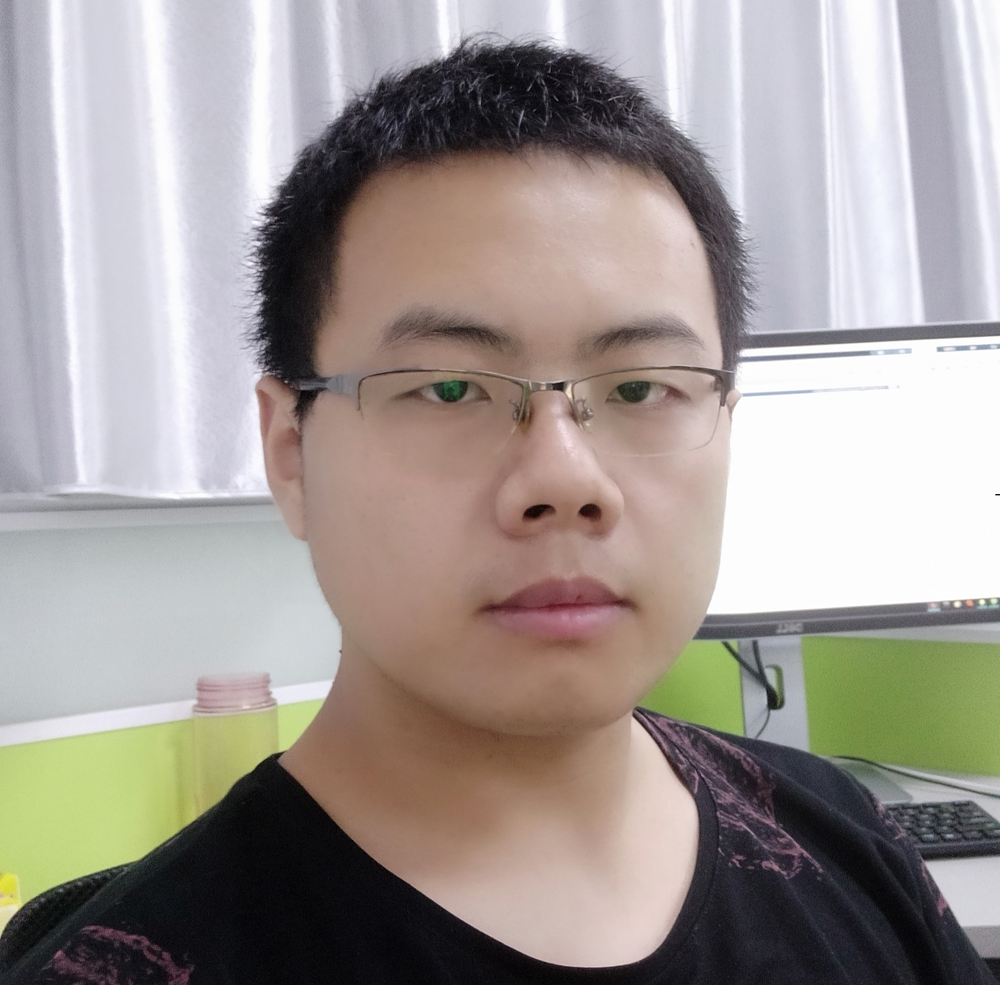

|  | 张 强 |
[6] Q. Zhang, Q. Yuan, J. Li, F. Sun, and L. Zhang, “Deep spatio-spectral Bayesian posterior for hyperspectral image non-i.i.d. noise removal,” ISPRS Journal of Photogrammetry and Remote Sensing, vol. 164, pp. 125-137, 2020. (SCI 1区Top, IF=6.942) [PDF]
[5] Q. Zhang, Q. Yuan, J. Li, Z. Li, H. Shen, and L. Zhang, “Thick cloud and cloud shadow removal in multitemporal images using progressively spatio-temporal patch group deep learning,” ISPRS Journal of Photogrammetry and Remote Sensing, vol. 162, pp. 148-160, 2020. (SCI 1区Top, IF=6.942) [PDF] [Code]
[4] Q. Zhang, Q. Yuan, J. Li, X. Liu, H. Shen, and L. Zhang, “Hybrid noise removal in hyperspectral imagery with spatial-spectral gradient network,” IEEE Transactions on Geoscience and Remote Sensing, vol. 57, no. 10, pp. 7317-7329, 2019. (SCI 1区Top, IF=5.630) [PDF]
[3] Q. Zhang, Q. Yuan, C. Zeng, X. Li, and Y. Wei, “Missing data reconstruction in remote sensing image with a unified spatial-temporal-spectral deep convolutional neural network,” IEEE Transactions on Geoscience and Remote Sensing, vol. 56, no. 8, pp. 4274-4288, 2018. (SCI 1区Top, IF=5.630, ESI高被引论文) [PDF] [Code]
[2] Q. Zhang, Q. Yuan, J. Li, Z. Yang, and X. Ma, “Learning a dilated residual network for SAR image despeckling,” Remote Sensing, vol. 10, no. 2, 196, 2018. (SCI 2区, IF=4.118) [PDF]
[1] Q. Yuan, Q. Zhang, J. Li, H. Shen, and L. Zhang, “Hyperspectral image denoising employing a spatial-spectral deep residual convolutional neural network,” IEEE Transactions on Geoscience and Remote Sensing, vol. 57, no. 2, pp. 1205-1218, 2019. (SCI 1区Top, IF=5.630, ESI高被引论文) [PDF] [Code]
[3] Q. Zhang, F. Sun, Q. Yuan, J. Li, H. Shen, and L. Zhang, “Combined the data-driven with model-driven stragegy: A novel framework for mixed noise removal in hyperspectral image,” IEEE International Geoscience and Remote Sensing Symposium (IGARSS), in Hawaii, USA, 2020. (口头报告)
[2] Q. Zhang, Q. Yuan, J. Li, H. Shen, and L. Zhang, “Cloud and shadow removal for Sentinel-2 by progressively spatiotemporal patch group learning,” IEEE International Geoscience and Remote Sensing Symposium (IGARSS), in Yakohama, Japan, 2019. (口头报告)
[1] Q. Zhang, Q. Yuan, H. Shen, and L. Zhang, “A unified spatial-temporal-spectral learning framework for reconstructing missing data in remote sensing images,” IEEE International Geoscience and Remote Sensing Symposium (IGARSS), in Valencia, Spain, 2018. (海报张贴)
学术机构:
审稿人: